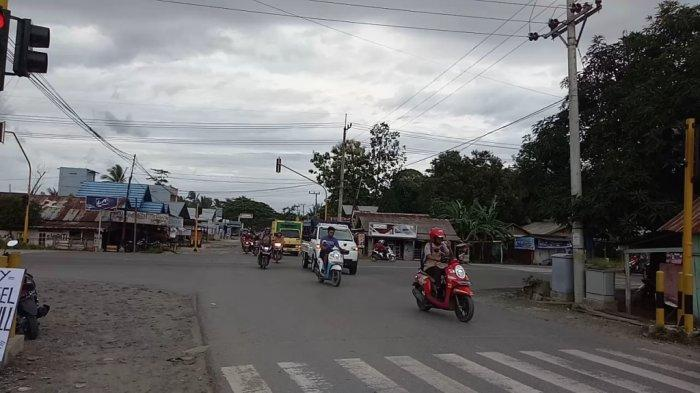
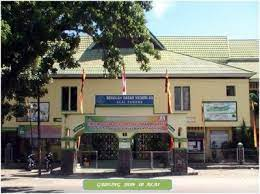

<!DOCTYPE html>
<html>
<head>
    <title>Padang</title>
    <link rel="stylesheet" type="text/css" href="leaflet.css"/>
    <script type="text/javascript" src="leaflet.js"></script>
</head>
<body>
    <div id="mapku" style="width: 100%; height: 600px"></div>
</body>
<script type="text/javascript">
    
    var myMap = L.map('mapku').setView([-0.9241036505205499, 100.36239299448495],16);

    var title = L.tileLayer('https://tile.openstreetmap.org/{z}/{x}/{y}.png',{
        maxZoom: 19,
        id: 'mapbox/streets-v11',
        tileSize: 512,
        zoomOffset: -1
    }).addTo(myMap);

   //  var LeafIcon = L.Icon.extend({
     //  options: {
       //    iconSize: [110,110]
     //  }
  // })

   // var markericon = new LeafIcon({iconUrl: 'images/markerr.png'});

    

    var myLocation = [
        [-0.9238022782367574, 100.36260042233536,'Majid Raya Sumbar'],
        [-0.9246225889550148, 100.36066741727579, 'Dinas Sosial Pemprov Sumatera Barat'],
        [-0.9262370681564361, 100.36086053641178, 'Taman Rimbo Kaluang'],
        [-0.9257972433359334, 100.36316187165073, 'Kupi Batigo Padang'],
        [-0.9255397848712291, 100.36452979825101, 'CHICKEN CRUSH PADANG'],
        [-0.9249822043910426, 100.36762895710395, 'Simpang 4 Alai'],
        [-0.9233809588677857, 100.36691077455914, 'SDN 03 Alai']
    ];

    for (var i = 0; i<myLocation.length; i++){
       markerMaps = new L.marker([myLocation[i][0], myLocation[i][1]]).addTo(myMap).bindTooltip(myLocation[i][2]).bindPopup(myLocation[i][3]);
    }
    
    var Jlnmasjidraya = [
        [-0.9241131171229822, 100.36133906310167], 
        [-0.92602952247953, 100.3613312079578],
        [-0.9252598188233193, 100.36551014466197],
        [-0.9249770704887674, 100.36762317852184],
        [-0.9234388936893915, 100.36708682079987], 
        [-0.9227791727635218, 100.36682734631805]
    ];

    L.polyline(Jlnmasjidraya).addTo(myMap);


    var circle = L.circle([-0.9241382266843733, 100.36245842693138],{
        color: 'Indian Red',
        fillColor: '#CD5C5C',
        fillOpacity: 0.5,
        radius: 300
    }).addTo(myMap).bindTooltip('Padang');

   

    var info_masjid_raya_sumbar = '<p style="text-align: center;"> <p>Masjid Raya Sumatra Barat adalah masjid raya di provinsi Sumatra Barat yang terletak di Jalan Chatib Sulaiman, Kecamatan Padang Utara, Kota Padang yang memiliki luas sekitar 4.430 meter persegi</p>';
    L.marker([-0.9238022782367574, 100.36260042233536]).bindTooltip("Masjid Raya Sumbar").bindPopup(info_masjid_raya_sumbar).addTo(myMap);

    var info_Dinas_Sosial_Pemprov_Sumbar = '<p style="text-align: center;"> <p>Dinas Sosial merupakan instansi pemerintah yang memiliki peran dalam meningkatkan kualitas kesejahteraan sosial perorangan, kelompok dan masyarakat.</p>';
    L.marker([-0.9246225889550148, 100.36066741727579]).bindTooltip("Kantor Dinas Sosial").bindPopup(info_Dinas_Sosial_Pemprov_Sumbar).addTo(myMap);

    var info_Taman_Rimbo_Kaluang= '<p style="text-align: center;"> <p>Salah satu taman yang terletak di sumbar yang difungsikan sebagai tempat bermain oleh masyarakat</p>';
    L.marker([-0.9262370681564361, 100.36086053641178]).bindTooltip("Taman Rimbo Kaluang").bindPopup(info_Taman_Rimbo_Kaluang).addTo(myMap);

    var info_Kupi_Batigo_Padang= '<p style="text-align: center;"> <p> Kopi Batigo adalah salah satu coffe shop atau tempat nongkrong di kota padang </p>';
    L.marker([-0.9257972433359334, 100.36316187165073]).bindTooltip("Kopi Batigo").bindPopup(info_Kupi_Batigo_Padang).addTo(myMap);

    var info_CHICKEN_CRUSH_PADANG= '<p style="text-align: center;"> <p>CHICKEN CRUSH PADANG adalah tempat makan di padang </p>';
    L.marker([-0.9255397848712291, 100.36452979825101]).bindTooltip("CHICKEN CRUSH PADANG").bindPopup(info_CHICKEN_CRUSH_PADANG).addTo(myMap);

    var info_simpang_4_alai= '<p style="text-align: center;"> <p>Jalan Raya utama yang mengubungkan beberapa lokasi di kota padang</p>';
    L.marker([-0.9249822043910426, 100.36762895710395]).bindTooltip("Simpang 4 Alai").bindPopup(info_simpang_4_alai).addTo(myMap);

    var info_sdn_03_alai= '<p style="text-align: center;"> <p>Sekolah Dsar yang terletak di sumatera barat padang</p>';
    L.marker([-0.9233809588677857, 100.36691077455914]).bindTooltip("SDN 03 Alai").bindPopup(info_sdn_03_alai).addTo(myMap);

    myMap.on('click',onMapClick);

   

</script>
</html>